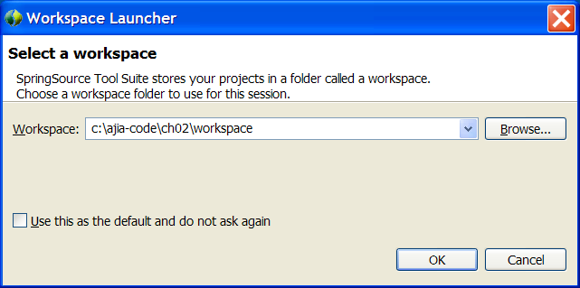
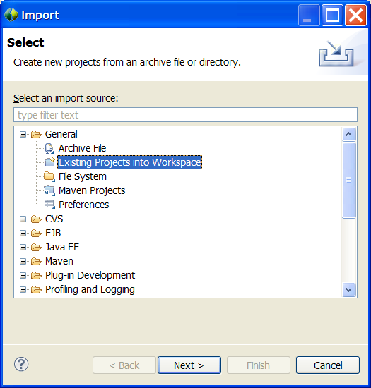
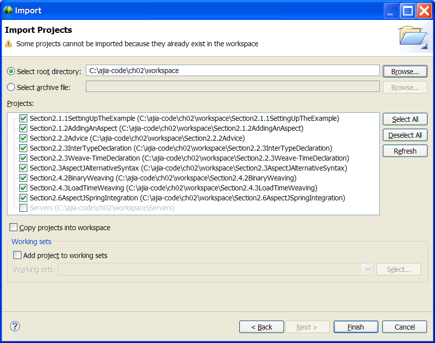
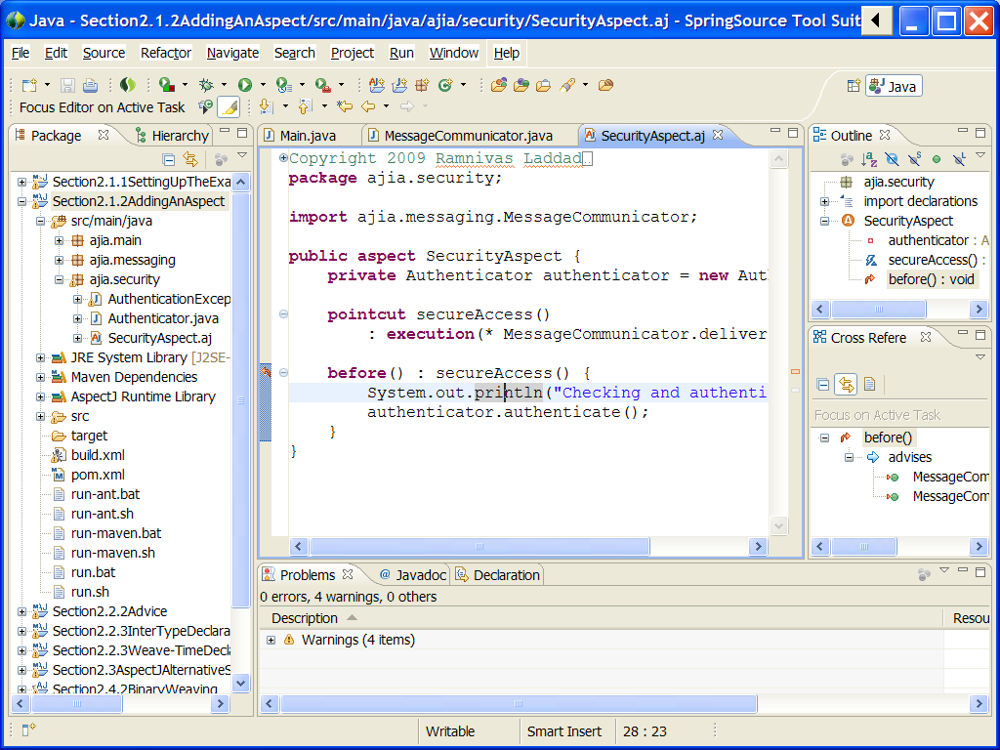

What's included
- Code for all chapters along with build scripts.
- Parent pom.xml files and a shared CommonPointcuts project.
All build scripts are optimized for simplicity of distribution (for example, the top-most parent POM declares dependencies for all projects even though not all projects need all dependencies).
Getting support
While a lot of care has been put into preparing the source packages, you may encounter issues that are most likely related to either your platform or the version of tools you use. In most cases, you will be able to resolve issues by examining the failure and adjusting your environment. However, if you get stuck, the best way to resolve such a problem is by visiting the book's forum. You can search if the problem you encountered has been already posted and resolved. If not, you can post a new message. Please use this forum to post questions directly related to the book and book's source code only.
For general AspectJ questions, the best place to visit is AspectJ Mailing List.
For general Spring AOP questions, the best place to visit is Spring's AOP forum.
Any suggestions to improve the user experience are welcome.
Prerequisite
The specified version for each component represents the tested version; a higher version may work as well.- Java SE Development Kit (JDK) 5 or 6
- Maven 2.2.0 (Important: Lower versions of Maven may not work with some of the projects.)
- Ant 1.7.1 (Optional for Maven users)
- AspectJ 1.6.5
Installation
- From the top-level directory (where this HTML file resides), type the
following command:
For Windows
> install.bat
For Unix systems including Mac OS X
$ ./install.sh
This will install the parent POMs and common projects to the local Maven repository. - (Optional for Maven users) Modify build.properties in the top-level directory to point to the AspectJ home directory
- (Optional for Maven and Ant users) Modify (depending on your platform) setHomes.bat or setHomes.sh to match your environment.
Running from shell
For each section, you will find run.bat/run.sh or multiple run*.bat/run*.sh scripts. Each of these scripts execute appropriate Maven goals, Ant targets, or shell commands and, in some cases, perform needed setup.
Each run*.bat and run*.sh script, in most cases, is a simple wrapper around 'mvn' (and in some chapters, 'ant'). These shell scripts are provided for convenience that show the expected commands matching the text in the book. You may directly execute 'mvn' if you so choose.
Note: You must execute install.bat or install.sh (which will require you to install Maven) before you can successfully execute these commands (even those that don't use Maven)
Maven stack traces often take a bit of careful reading to understand the real error. For example, in Section5.6SofteningCheckedException, you will need to observe the stack trace carefully to see that the real reason is org.aspectj.lang.SoftException, which correctly illustrates the example in the book.
Setting up Eclipse
The Eclipse distribution available with SpringSource Tools Suite is highly recommended, since it comes preconfigured with all required plugins.
Alternatively, you may install Eclipse 3.5 (Java EE edition) followed by installation of the m2Eclipse, AJDT, and Spring IDE plugin.
Each chapter is packaged in Eclipse workspace style (but without the workspace metadata). For example, for chapter 3, you will find the ch03/workspace directory. For each chapter that you want to try, follow these steps (You will need to perform this step only once for each chapter):
- Start STS or Eclipse. When prompted for the workspace, point to the 'workspace' directory of the chapter. 
-
Import the existing projects by invoking
- File->Import... 
- In the dialog box that appears, choose General/Existing Projects into Workspace (Warning: Do not choose Maven Projects.) 
- Let the workspace refresh complete... now you know what to do! 
You need to launch a few applications using the load-time weaver. Look for a file with .launch extension (such as LoadTimeWeaver.lauch in chapter 2) in Eclipse package explorer. You can launch such a file through "Run As" menu.If a launch file is provided, executing the driver or tests without it will likely result in unexpected output or test failures.
Known issues
- Although each project is Maven enabled, importing it as Maven Project leads to unexpected issues.